要完成所有的实验，大概需要 1 小时。
在本练习中，您将学习如何使用Amazon Personalize 构建实时的推荐系统。Amazon Personalize是AWS在2018年推出的全新机器学习服务，用来帮助客户低成本地快速构建推荐类应用程序，而不需要用户有任何机器学习的经验。
本次实验的场景是利用用户针对电影的打分高低，来为用户推荐他可能喜欢的电影。我们用到的实验数据为csv格式，包含了user_id, item_id, rating以及timestamp四个字段的内容。
其中user_id代表用户ID，item_id代表电影ID，rating代表用户对电影的打分，timestamp代表打分的时间，样例数据如下所示：
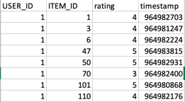
在此教程中，您将完成以下实验：
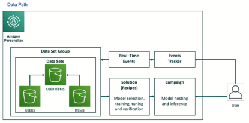
本实验将在美国东部 (弗吉尼亚北部)（us-east-1）区域进行；本实验涉及的数据链接为 https://aws-ai-day.s3.amazonaws.com/ratings.csv，请学员们下载后上传至自己的S3存储桶（推荐大家创建S3存储桶时为了避免名称唯一性的冲突问题，可以在存储桶名字那里加入自己的账户ID）。
如下数据集内容供参考
1.上传数据到S3存储桶
登录AWS控制台，选择S3服务，点击创建新的存储桶，存储桶名字需自定义，区域选择美国东部 (弗吉尼亚北部)，如下图所示： 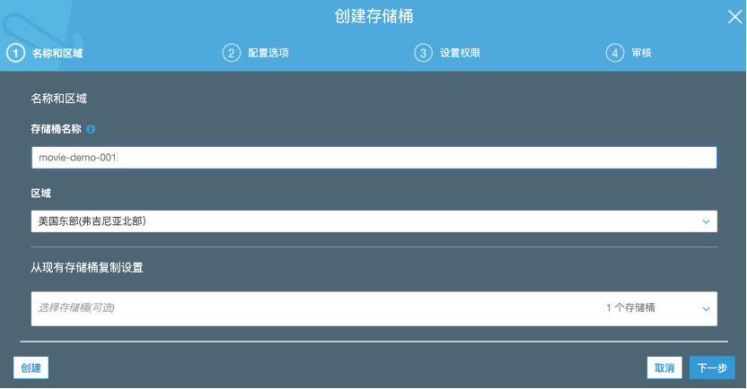
选择刚才创建的S3桶，点击权限标签卡，为该存储桶指定新的存储桶策略，将以下代码复制粘贴进输入框中，记得替换bucket-name为你真实的S3存储桶名字，点击保存，如下图所示：
{
"Version": "2012-10-17",
"Id": "PersonalizeS3BucketAccessPolicy",
"Statement": [
{
"Sid": "PersonalizeS3BucketAccessPolicy",
"Effect": "Allow",
"Principal": {
"Service": "personalize.amazonaws.com"
},
"Action": [
"s3:GetObject",
"s3:ListBucket"
],
"Resource": [
"arn:aws:s3:::bucket-name",
"arn:aws:s3:::bucket-name/*"
]
}
]
}
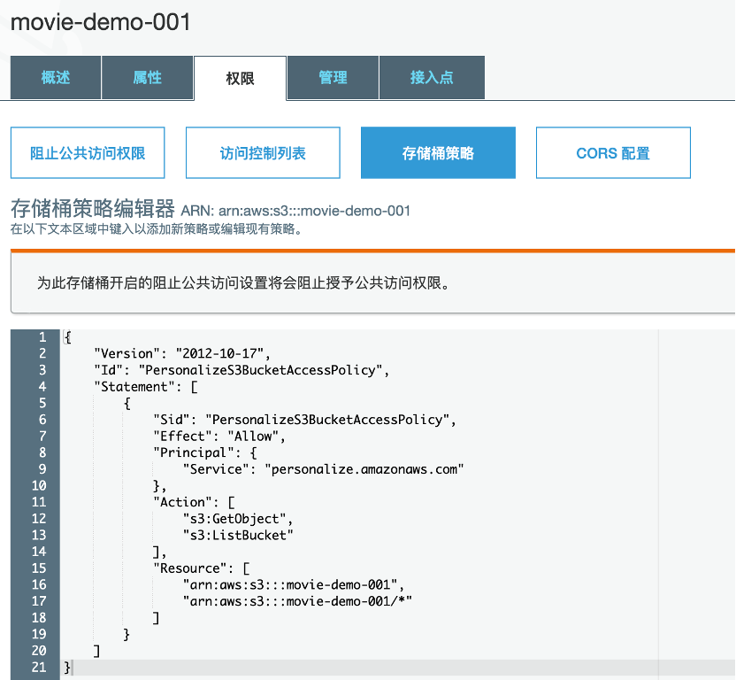
ratings.csv ）上传至创建好的S3存储桶。
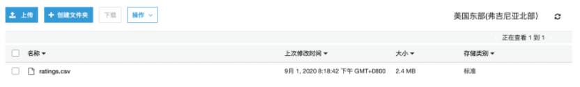2.创建数据集组
登录AWS控制台，在控制台右上角选择美国东部 (弗吉尼亚北部)，进入Amazon Personalize页面（在 服务 菜单栏中，输入关键字 Personalize 搜索Amazon Personalize服务）
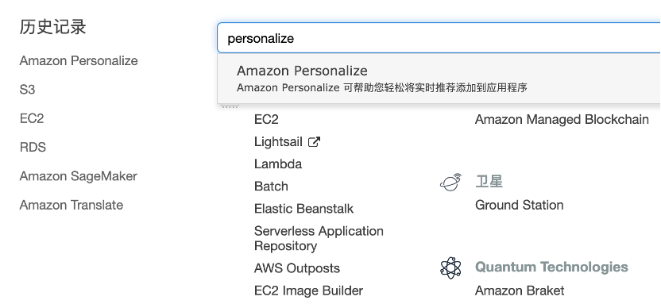
进入Amazon Personalize服务主界面后，选择 Get Started，进入创建数据集组的页面，输入数据集组名字，例如movie-demo,然后点击next，进入创建数据集的页面，输入数据集的名称，例如 movie-dataset：
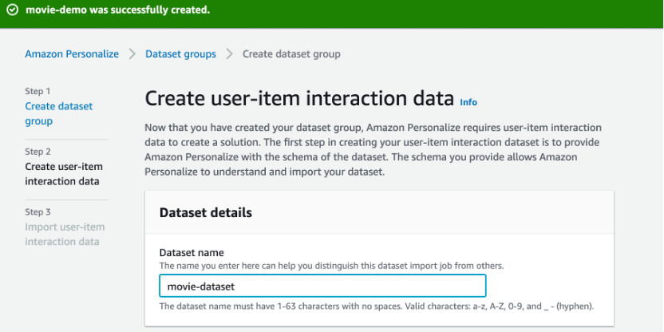
继续在本页面中，为数据集定义schema，首先输入选择创建新的schema的名称，然后输入schema的名称，例如movie-schema。schema的内容是用户为电影打分数据的字段信息描述，在此前的章节中已经有过介绍，这里我们直接复制下面的代码到输入框中即可。
{
"type": "record",
"name": "Interactions",
"namespace": "com.amazonaws.personalize.schema",
"fields": [
{
"name": "USER_ID",
"type": "string"
},
{
"name": "ITEM_ID",
"type": "string"
},
{
"name": "rating",
"type": "double"
},
{
"name": "timestamp",
"type": "long"
}
],
"version": "1.0"
}
输入信息完成后，如下图所示： 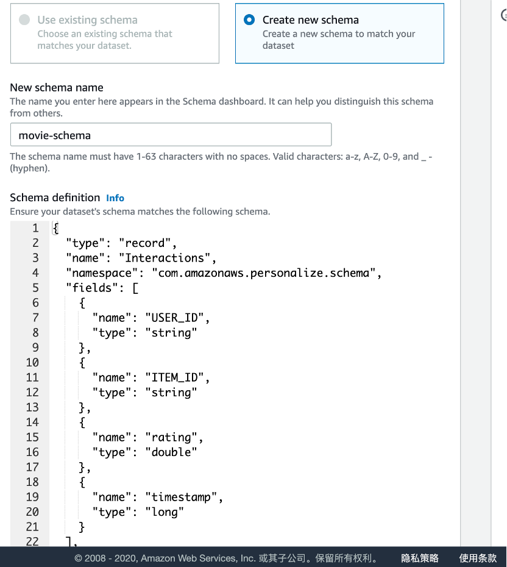
点击next进入数据集导入页面，在页面中输入数据导入作业的名称，例如movie-dataset-import。然后创建 IAM Service Role，选择创建新的角色，在弹出的对话框中选择 Any S3 bucket，然后点击创建，如下图所示：
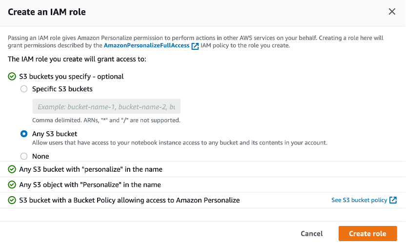
创建角色后，在底部输入框中指定好rating.csv在S3中的存储路径，最后点击完成，如下图所示： 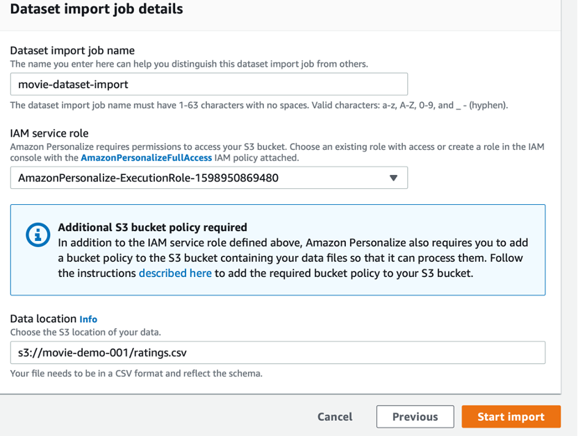
在数据导入完成后，大约耗时12分钟，因为后台会坐数据校验和特征工程，我们可以通过控制台观察到数据集和数据导入作业的状态为Active，如下图所示： 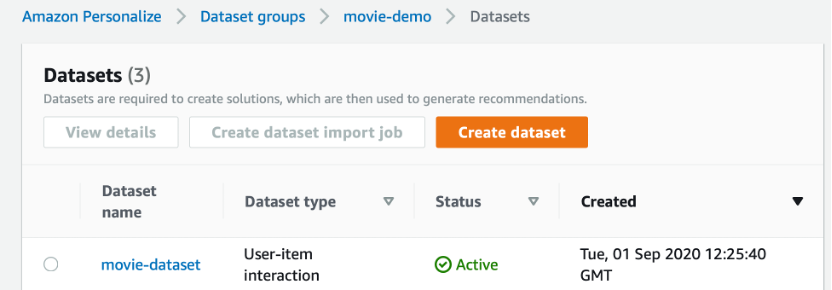
3.使用配方创建解决方案
在数据集导入完成后，回到Dashboard页面，你会发现创建解决方案的按钮变亮了，点击Start，如下图所示： 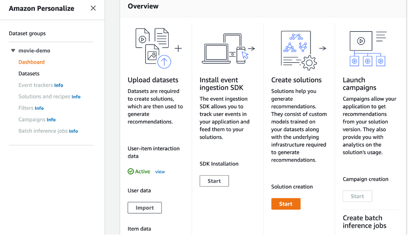
在弹出的页面中输入解决方案的名字，例如movie-solution，然后选择 aws-user-personzlize配方，保持其他选项为默认值，最后点击next，如下图所示：
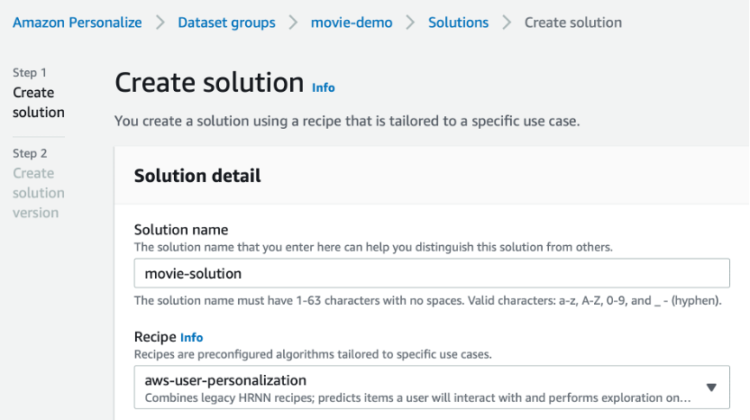
在弹出的页面中，点击完成，等待解决方案创建完成，整个过程大约35分钟，如下图所示： 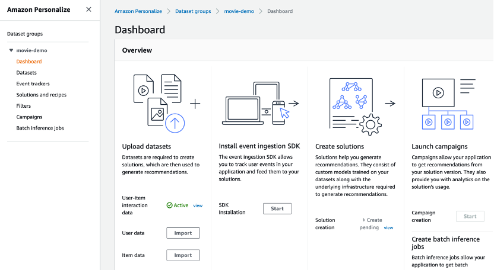
解决方案处于创建过程中 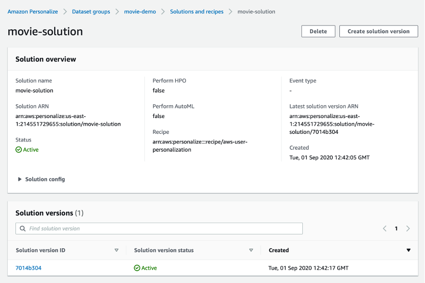
耐心等待创建完成即可。
4.创建市场活动
继续回到Dashboard页面，可以看到创建市场按钮变量，点击创建，如下图所示： 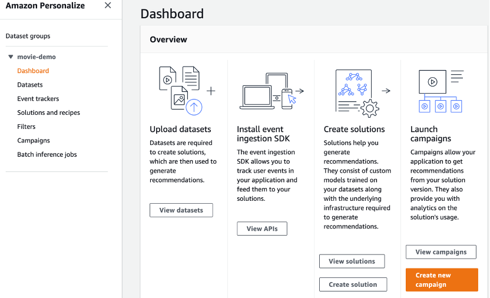
在弹出的页面中，输入市场活动的名称，例如movie-campaign，然后选择此前创建好的解决方案以及相应的版本，其余的选项保持默认，点击创建，如下图所示：
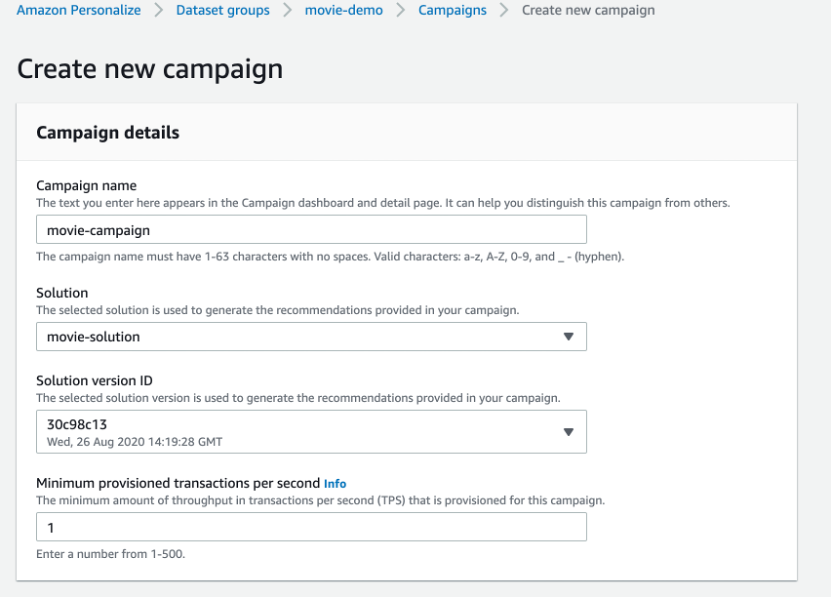
等待市场活动创建完成，状态变为Active，大概8分钟左右，如下图所示： 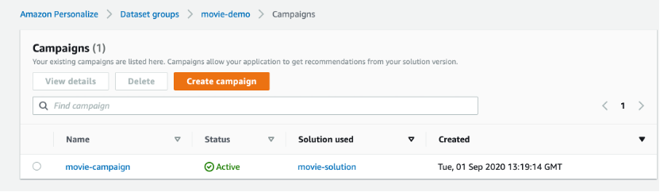
5.为用户获取推荐
点击此前创建的市场活动进入详情页，在页面中输入用户ID，点击获取推荐就能得到为该用户推荐的电影ID和相应的得分，如下图所示： 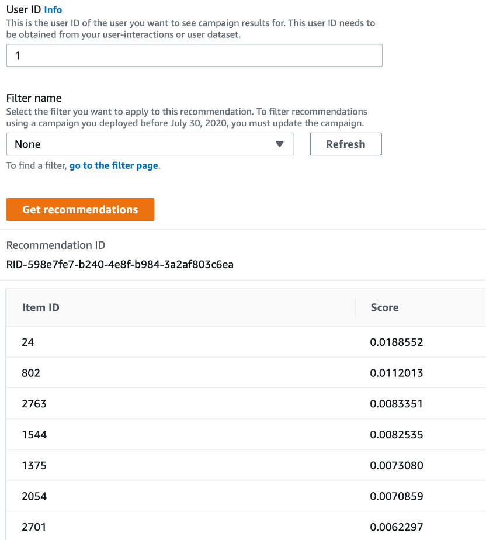
至此，您已经独立完成了基于Amazon Personalize的推荐应用实验。
文档和版权信息
本章作者： Li Wei
~完~